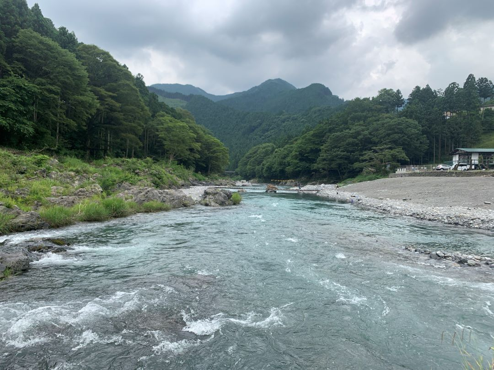

山中葉月についてもっと知る
今までやってきたこと
大学卒業後、株式会社トラベリエンスに入社し、カスタマーサービスチームで、主に訪日旅行者やガイド のトラブルサポートを担当とし、サイトの改善や登録ガイド向けの交流イベント企画など、多岐にわたる 業務を手がけてきました。
これまでの業務では、課題を解決するための施策を組み立て実行することで、改善につなげてきたほか、 チームの他のメンバーと積極的に連携し、全体の業務を最適に分配することで、有事の対応も難なく乗り 切るなど推進してきました。
モットー「自分にしか作れないクリエイティブな人生を」他人が歩める人生は他人が歩めばいい。自分なりのオモロイ組み合わせで人と違う生き方を。
今やっていること
転職活動をメインに、プログラミング（HTML, CSS, JavaScript, MySQL)、英語、読書（カスタマーサポート、サクセス、文章の書き方など）について勉強しています。
趣味
クラフトビール、コーヒー、日本酒、美味しいものを食べるのが好き。最近はボルダリング、登山にも挑戦中。